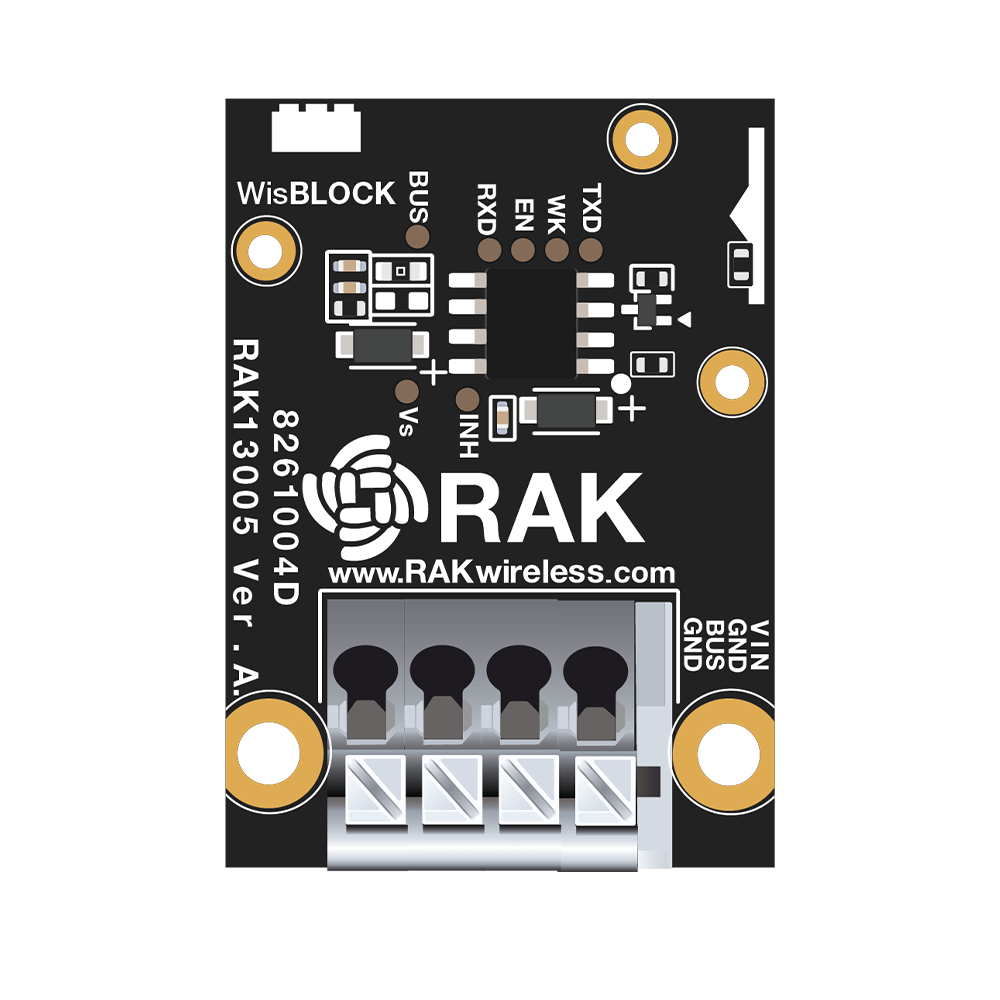

WisBlock

WisBlock
WisBlock 是一个模块化系统，可以轻松地将低功耗广域网 (LPWAN) 实施到物联网解决方案中。
WisBlock 可以快速实现从原型设计到批量生产，而无需为每一步都创建新的硬件模块。
特点
- 紧凑的硬件设计
- 标准化组件
- 完全模块化
硬件组成
- WisBlock Base
- WisBlock Core
- WisBlock Sensor
- WisBlock IO

WisBlock Base
WisBlock系列产品是搭载在WisBlock 底板上，它可以轻松的插入WisBlock核心板和多个其他的模块。
WisBlock 底板同时还提供电源，支持可充电电池，太阳能的接口。同时还具有编程和调试的连接器。
目前已经有2款WisBlock底板，分别为 RAK5005-O Base Board和RAK19003 Mini Base Board。
| RAK5005-O Base | RAK19003 mini Base |
|---|---|
 |
 |
两款WisBlock Base对比
| Parameter | RAK5005-O | RAK19003 |
|---|---|---|
| USB | Micro USB | Type C |
| Battery | ✓ | ✓ |
| Solar | ✓ | ✓ |
| Reset | ✓ | ✓ |
| LED | ✓ | ✓ |
| CPU Slot | ✓ | ✓ |
| Sensor Slot | 4 | 2 |
| IO Slot | 1 | x |
| Header | 3 | 2 |
| Size | 60 * 30 mm | 35 * 30 mm |
WisBlock Core
WisBlock Core 是整个wisblcok的核心单元，用来处理和控制其他模块。
各种不同的核心模块可实现不同的通信方式，如LoRa，WiFi，BLE等。
RAK4631
方案: Nordic nRF52840 + Semtech SX1262
支持的无线技术: BLE + LoRa
RAK11200
方案: Espressif ESP32-WROVER
支持的无线技术: WiFi/BlueTooth
RAK11310
方案: RaspberryPi RP2040 + Semtech SX1262
支持的无线技术: LoRa
| RAK4631 | RAK11200 | RAK11310 |
|---|---|---|
 |
 |
3款 WisBlcok Core对比
| Parameter | RAK4631 | RAK11200 | RAK11310 |
|---|---|---|---|
| MCU | Nordic nRF52840 | Espressif ESP32-WROVER | RaspberryPi RP2040 |
| CPU clock | 64 MHz | Up to 240 MHz | 133 MHz |
| core | 32-bit ARM® Cortex™-M4 CPU | Two low-power Xtensa® 32-bit LX6 microprocessors | Dual M0+ Core |
| Flash | 1 MB | 4 MB | 2 MB |
| RAM | 256 KB | 520 KB, 8 MB PSRAM | 246 KB |
| LoRa MCU | Semtech SX1262 | / | Semtech SX1262 |
| LoRa | LoRaWan® 1.0.2 | / | LoRaWan® 1.0.2 |
| Bluetooth | Bluetooth 5.0 | Bluetooth v4.2 BR/EDR, BLE | / |
| WiFi | / | 802.11 b/g/n | / |
| GPIOs | I2C, SPI, UART,Analog inputs | I2C, SPI, UART,Analog inputs | I2C, SPI, UART,Analog inputs |
| SWD | ✓ | x | ✓ |
| Temperature range | -40 °C to +85 °C | -40 °C to +85 °C | -40 °C ~ 70 °C |
| Supply voltage | 2.0 ~ 3.6 V | 3.0 V ~ 3.6 V | 2.0 V ~ 3.6 V |
| Antenna | external LoRa and BLE antenna | Built-in PCB antenna | external LoRa antenna |
| low power | ✓ | ✓ | ✓ |
WisBlock Senor
| RAK1901 TEMP&HUMI | RAK1902 PRESSURE | RAK1903 LIGHT | RAK1904 3-AXIS |
|---|---|---|---|
 |
 |
 |
|
| RAK1906 ENVIRONMENT | RAK1910 GNSS | RAK12003 Infrared Temperature | RAK12004 MQ2 Gas |
 |
 |
|
 |
| RAK12005 Rain Sensor | RAK12006 PIR | RAK12007 Ultrasonic | RAK12009 MQ3 Alcohol Gas |
 |
 |
||
| RAK12010 Ambient Light | RAK12011 Barometer WT | RAK12012 Heart Rate | RAK12015 Vibration Detection |
 |
 |
||
| RAK12500 GNSS | RAK16000 DC Current | RAK18000 PDM Stereo Microphone | |
 |
 |
 |
WisBlock Wireless
| RAK13101 GSM/GPRS | RAK2305 WiFi | RAK18000 PDM Stereo Microphone |
|---|---|---|
 |
WisBlock Interface
| RAK5801 4-20mA | RAK5802 RS485 | RAK5804 Extension | RAK5811 0-5V |
|---|---|---|---|
 |
 |
||
| RAK1920 Sensor Adapter | RAK13001 Relay | RAK13002 IO | RAK13003 IO Expansion |
 |
 |
||
| RAK13004 PWM Expander | RAK13005 LIN | RAK14002 Touch | |
 |
 |  |
WisBlock Display
| RAK14000 E-Ink Display | RAK14001 RGB LED | RAK14003 LED Bar Graph | RAK1921 OLED Display |
|---|---|---|---|
 |
 |
 |
WisBlock Extra
| RAK12002 RTC | RAK18001 Buzzer | RAK19005 Sensor Extension Cable | RAK19008 IO Extension Cable |
|---|---|---|---|
 |
 |
 |
WisBlock Storage
| RAK15000 EEPROM | RAK15001 Flash | RAK15002 Micro SD Card |
|---|---|---|
 |
WisBlock Power
| RAK19002 Boost | RAK19004 Green Power | RAK19006 Wireless Charge |
|---|---|---|
 |
 |
 |
WisBlock Motor
| RAK17000 Motor Control |
|---|
 |
典型应用

农业应用
物流应用
工业应用

本博客所有文章除特别声明外，均采用 CC BY-NC-SA 4.0 许可协议。转载请注明来自 Stephen's blog！